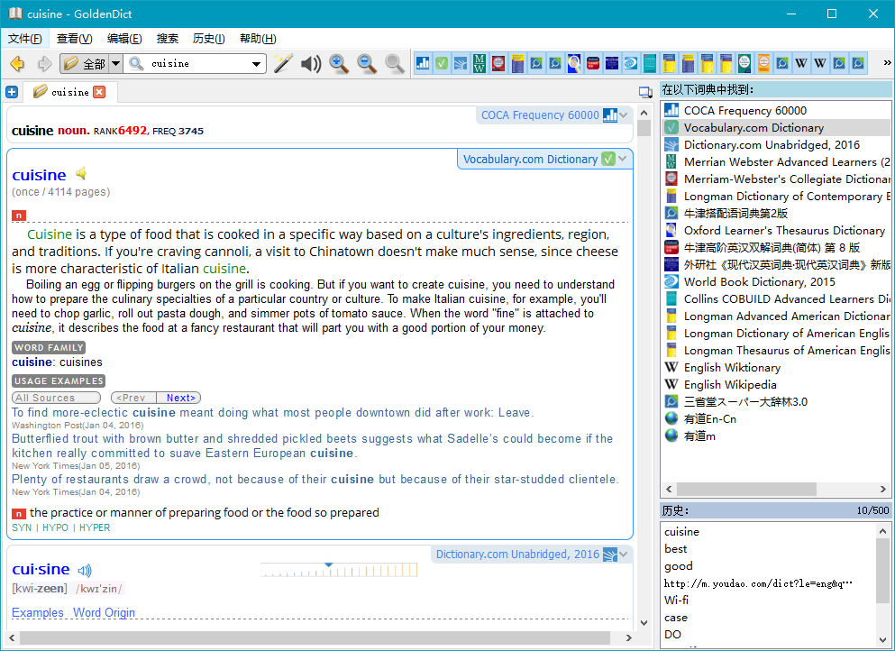
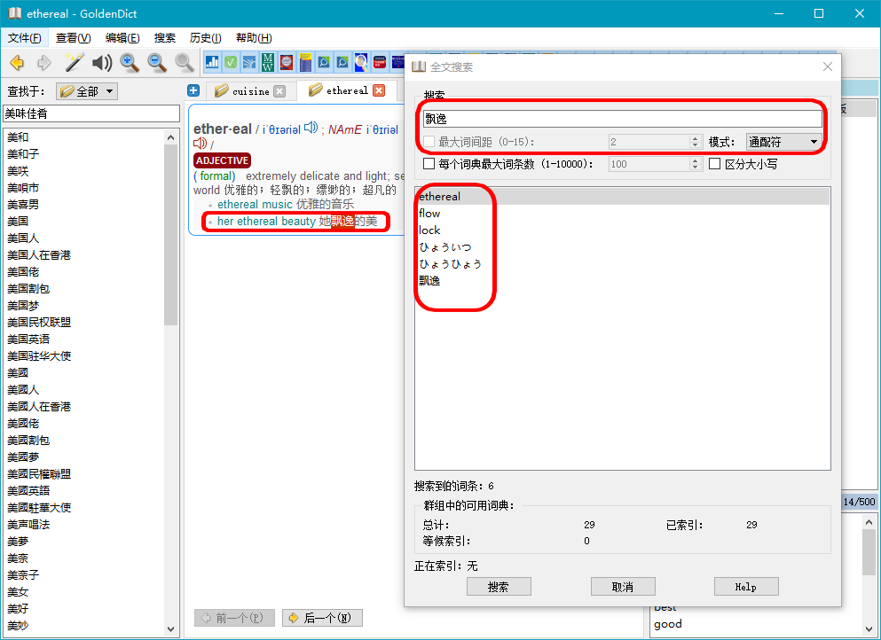
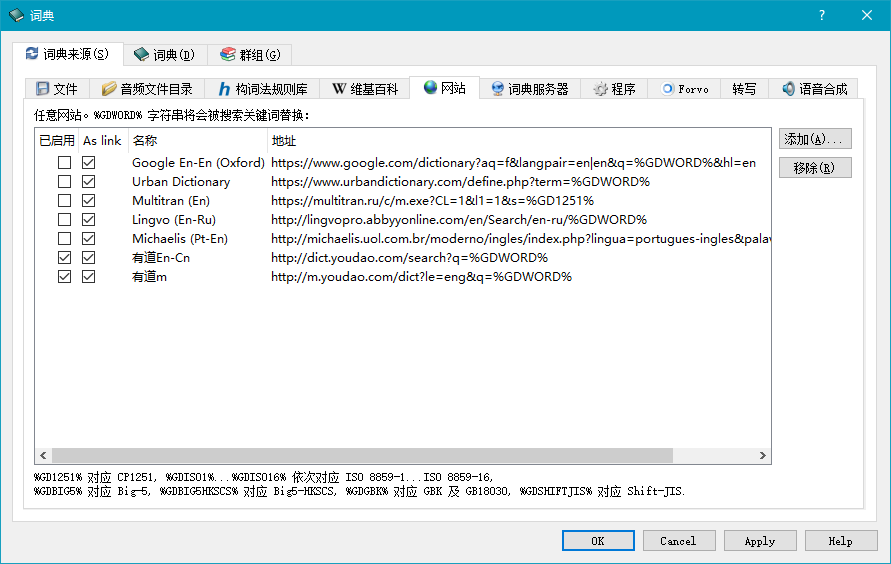

使用Goldendict查词时，各类词典查询结果全部显示在同一个页面，用词典名称区分开，同时在侧边栏显示词典标签，点击点可以快速跳转。 
有了这个功能，就相当于有了一个大型语料库。举个例子：查询“飘逸”这个词应该如何用英语表达。
使用本地词典，只能搜索到一个结果“elegant”，如下图：
而使用全文搜索（快捷键“Ctrl+Shift+F”），从安装的所有字典里搜索”飘逸“，得到以下结果:

使用”全文搜索“功能可以搜索到更多的内容。
有时候需要使用在线词典，但是切换词典客户端和浏览器界面不方便，而Goldendict词典可以自行添加网络词典，例如youdao，Longman，Coliins等。
